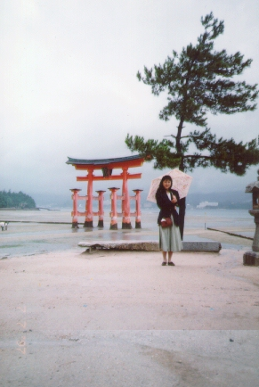

Japan (97.7)
Aki no Miyajima, Hiroshima

| We have a rainy season in June and early in July in Japan. It was a rainy day. Hiroshima is the southern part in Japan. "Aki no Miyajima" is a famous shrine, which is in the sea (not into). This picture is "torii," a sacred arch. |

= Aki no Miyajima in Hiroshima (97.7)=
[English home]